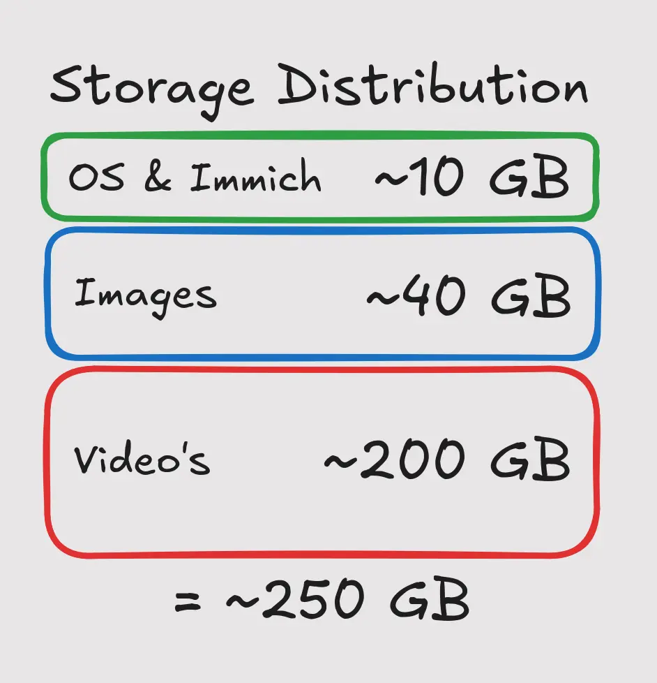
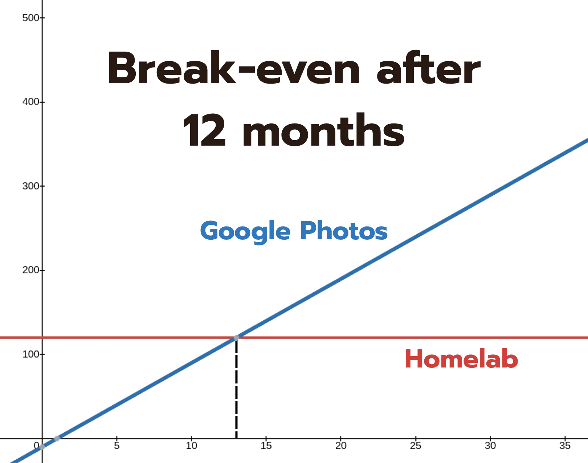

Storage: how much space do you need?
A photo on a modern phone is only 3–8 MB, so a expansive camera roll of 5,000 photos takes up roughly 15-40 GB. Video is the real weight: one minute of 4K footage is about 350 MB, so an hour fills around 21 GB. Added up most people need 50-200 GB.
If you're using an old laptop or computer the built-in storage should cover that easily. Immich also keeps smaller preview versions of every file, so leave a little headroom. If you eventually do need expansion or redundancy a 1 TB USB hard drive can be had for around €90.

Hardware: what is needed to run Immich?
An old laptop or desktop is the easiest way to start and it's free! If you don't have spare hardware laying around a Raspberry Pi can be an affordable machine to get started. A 4 GB model is able to run Immich perfectly fine, though Immich's smart search uses machine learning, which is heavy for a Pi. This means process pictures might take it little longer, but the end result will always be the same.
The sweet spot for most people is a second-hand mini PC: quiet, tiny and really power efficient. A 8 GB model can be had for around €120 and will be able to run additional services like self-hosted Netflix or a personal AI agent.
Cost: one-time, not a subscription
This is where self-hosting pays off. Immich itself is free and open-source. €0,- forever. The only real cost is storage: when you take more pictures, you'll need to buy more storage.
In the long term this will pay off really well though. Comparing 2 TB with Google Photos: a 2 TB drive costs around €120, while the subscription cost €9,99. This means the drive will pay itself off in about 1 year, while you can continue to use the drive for as long as it lasts. No monthly fee, no price rises, no advertisements.

Skills: what you need to know
Good news: it's easy. I've made step-by-step instructions for getting started, including all commands you need to run. Just copy-paste and it'll be running in no-time. Volunteer developers put a lot of work into these services and user-friendliness is a big part of their goals.
Immich itself has a really clean UI with an organized admin panel. Once it's set up you will not have to touch a terminal. The documentation is excellent and the community is large and friendly, so you'll always be able to find help.